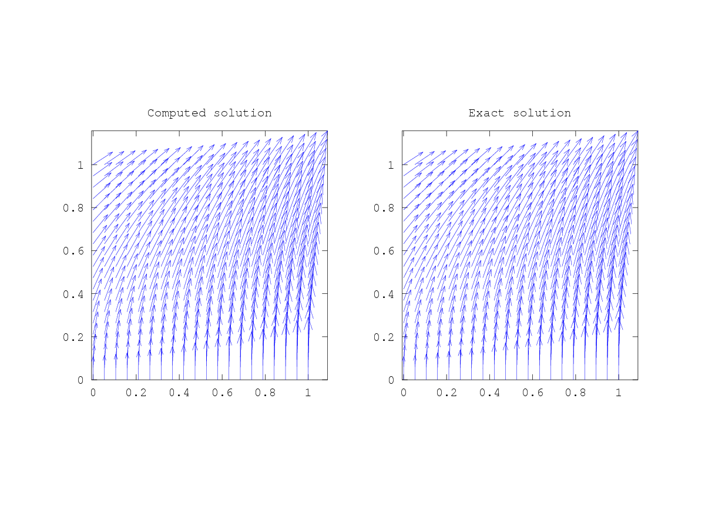
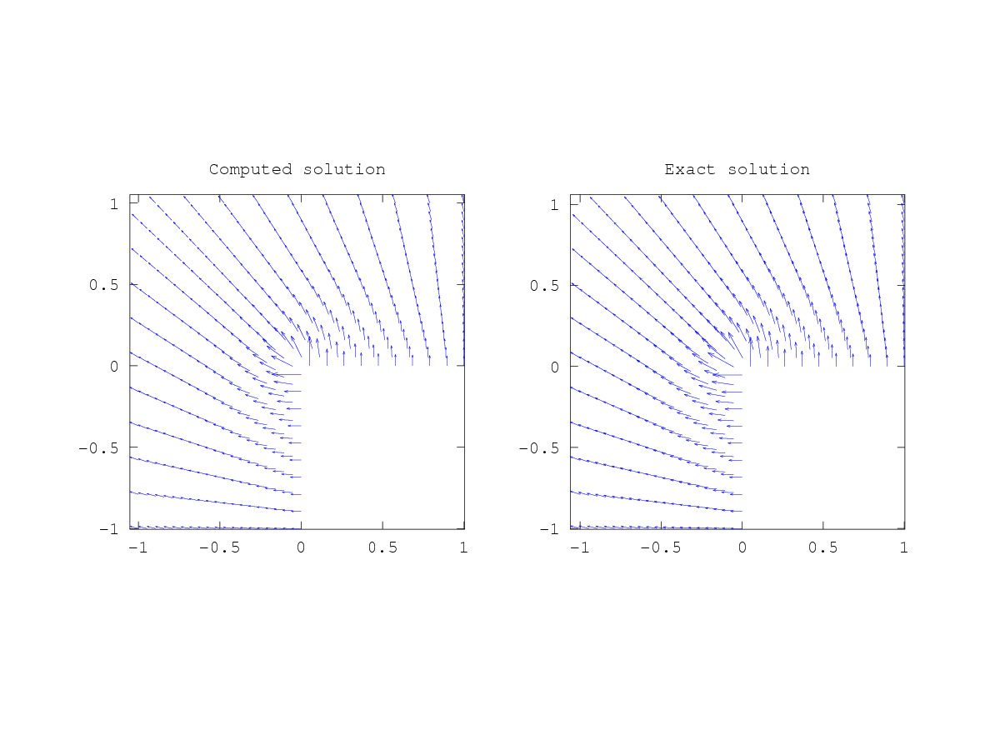
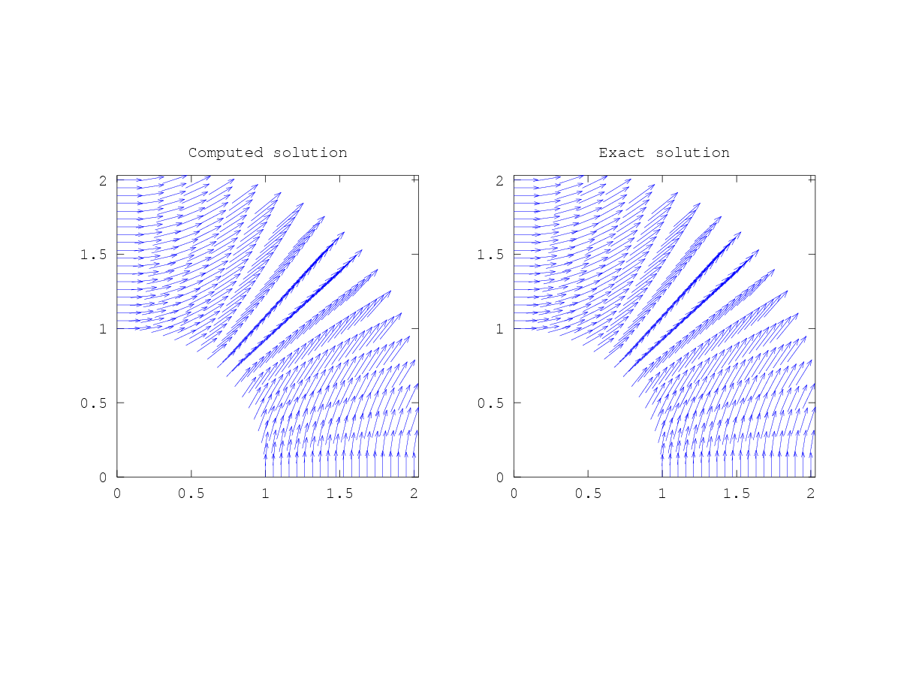
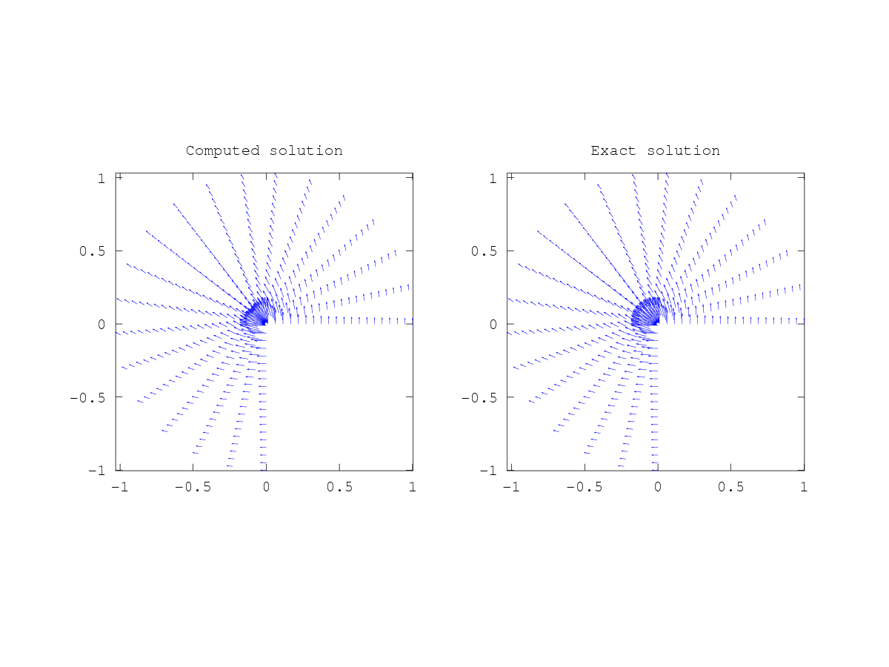

SOLVE_MAXWELL_SRC_2D: Solve a 2d Maxwell source problem with a B-spline discretization.
Example to solve the problem
curl ( epsilon(x) curl (u)) + mu u = f in Omega = F((0,1)^2)
(epsilon(x) curl(u)) x n = g on Gamma_N
u x n = h on Gamma_D
USAGE:
[geometry, msh, space, u] = solve_maxwell_src_2d (problem_data, method_data)
INPUT:
problem_data: a structure with data of the problem. It contains the fields:
- geo_name: name of the file containing the geometry
- nmnn_sides: sides with Neumann boundary condition (may be empty)
- drchlt_sides: sides with Dirichlet boundary condition
- c_mass: coefficient for the mass matrix (mu in the equation)
- c_stiff: coefficient for the stiffness matrix (epsilon in the equation)
- f: source term
- g: function for Neumann condition (if nmnn_sides is not empty)
- h: function for Dirichlet boundary condition
method_data : a structure with discretization data. Its fields are:
- degree: degree of the spline functions.
- regularity: continuity of the spline functions.
- nsub: number of subelements with respect to the geometry mesh
(nsub=1 leaves the mesh unchanged)
- nquad: number of points for Gaussian quadrature rule
OUTPUT:
geometry: geometry structure (see geo_load)
msh: mesh object that defines the quadrature rule (see msh_2d)
space: space object that defines the discrete functions (see sp_vector_2d_curl_transform)
u: the computed degrees of freedom
See also EX_MAXWELL_SRC_LSHAPED for an example.
Copyright (C) 2010, 2011 Rafael Vazquez
This program is free software: you can redistribute it and/or modify
it under the terms of the GNU General Public License as published by
the Free Software Foundation, either version 3 of the License, or
(at your option) any later version.
Demonstration 1
The following code
ex_maxwell_src_square
Produces the following output
The result is saved in the file maxwell_square_Deg3_Reg2_Sub8 error_hcurl = 1.9462e-05 error_l2 = 9.9050e-06
and the following figure
| Figure 1 |
|---|
|  |
Demonstration 2
The following code
ex_maxwell_src_Lshaped
Produces the following output
The result is saved in the file maxwell_Lshaped_Deg3_Reg2_Sub8 error_hcurl = 0.046793 error_l2 = 0.046786
and the following figure
| Figure 1 |
|---|
|  |
Demonstration 3
The following code
ex_maxwell_src_ring
Produces the following output
The result is saved in the file maxwell_ring_Deg3_Reg2_Sub9 error_hcurl = 5.7262e-04 error_l2 = 3.8592e-04
and the following figure
| Figure 1 |
|---|
|  |
Demonstration 4
The following code
ex_maxwell_src_pacman
Produces the following output
The result is saved in the file maxwell_pacman_Deg3_Reg2_Sub6 error_hcurl = 0.018602 error_l2 = 0.018602
and the following figure
| Figure 1 |
|---|
|  |